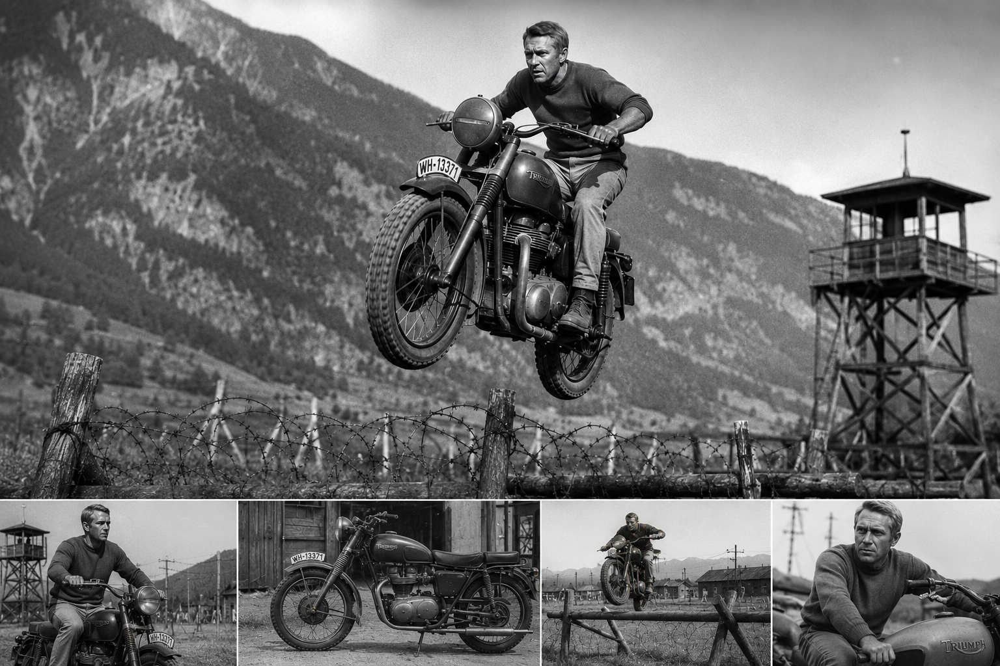
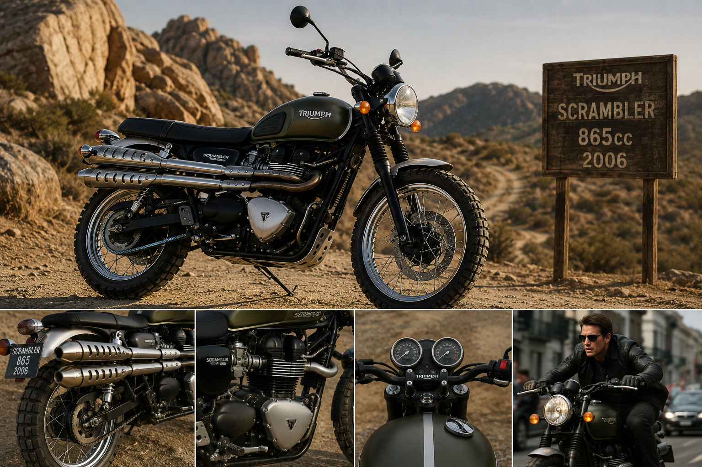
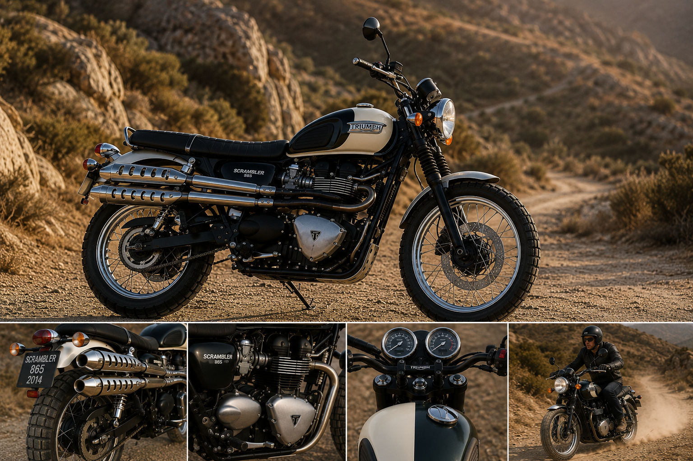
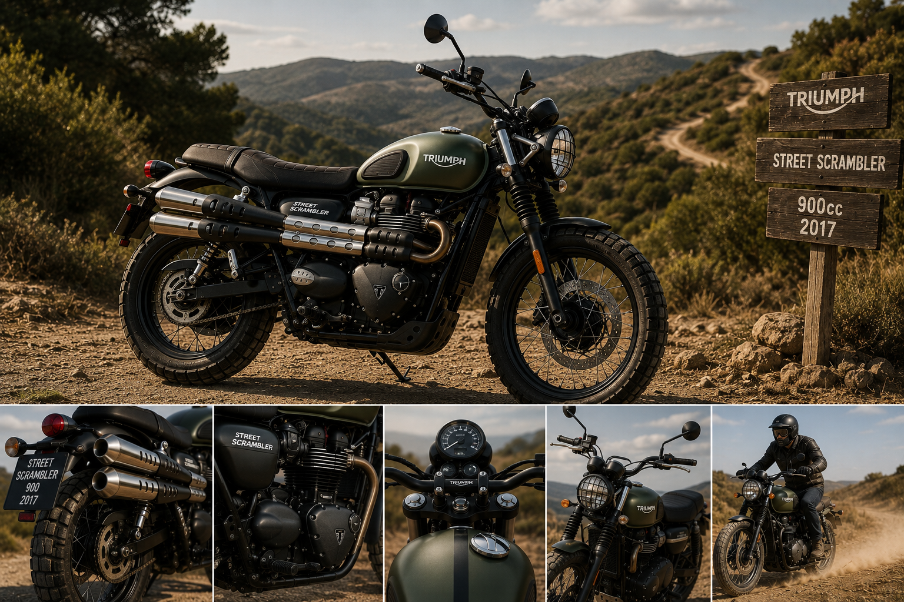
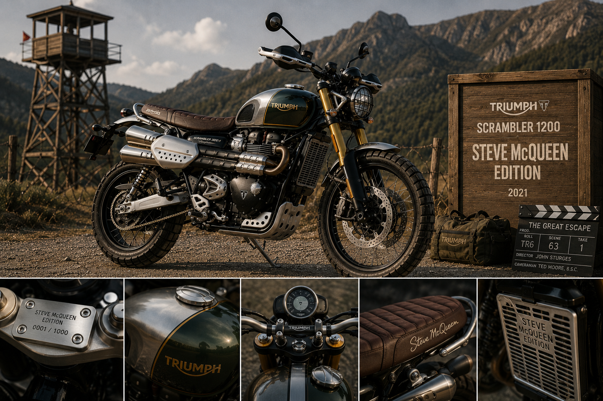
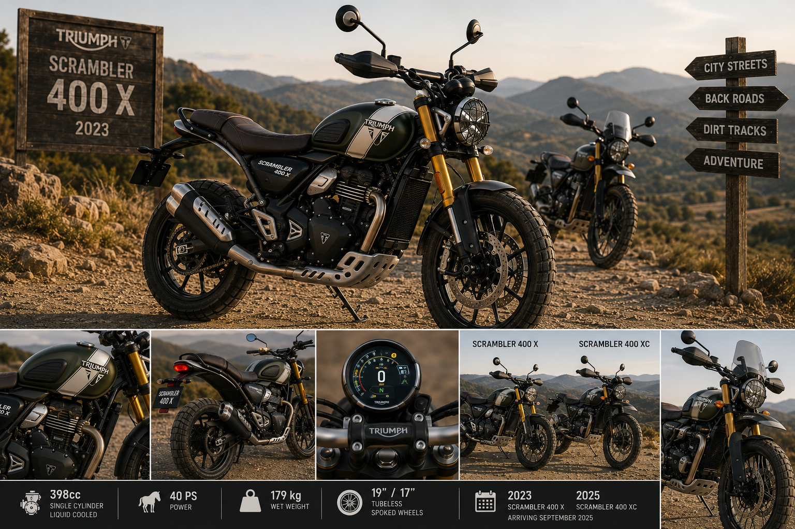

Aux Origines — Le Scrambling et la Côte Californienne
Quand les motards américains réinventaient la moto
Pour comprendre la Scrambler, il faut se projeter dans la Californie des années 1950. La côte ouest américaine vit alors une véritable explosion du hors-piste motorisé. Des milliers de pilotes — vétérans de la Seconde Guerre mondiale, ouvriers, étudiants — se retrouvent le week-end pour dévaler les collines, traverser les déserts et se défier sur des terrains sauvages. La discipline n'a pas encore de nom officiel, mais elle en aura bientôt un : le scrambling.
Les motos utilisées sont des routières modifiées à la va-vite. On relève l'échappement pour gagner de la garde au sol, on monte un guidon plus large pour mieux contrôler la machine, on chausse des pneus plus cramponnés, on retire tout ce qui est superflu pour gagner du poids. Ces machines bricolées, dures, sans concession, sont les premiers scramblers de l'histoire. Et les Triumph y sont omniprésentes.
La Big Bear Motorcycle Run, le Catalina Grand Prix, les courses de désert — Triumph y règne en maître. Les importateurs américains de la marque comprennent vite l'intérêt commercial : il faut proposer une version de série de ces machines préparées. C'est ainsi que naît en 1956 la TR6 Trophy, première Triumph officiellement pensée pour le hors-piste. Échappements remontés, guidon large, garde-boue aluminium, pneus crantés : la formule est posée. Elle ne changera plus pendant soixante ans.
Le scrambling est un tel phénomène que les épreuves les plus populaires disparaissent, victimes de leur propre succès. La Big Bear Motorcycle Run, créée en 1921, est arrêtée en 1961 suite à des débordements liés à l'afflux de participants — parfois plus de 1 000 engagés. Seul le Lake Elsinore Grand Prix survivra à la déferlante. Parmi ses participants les plus assidus : un certain Steve McQueen.
1963 — La Grande Évasion et l'Immortalité
Steve McQueen, une TR6, et le saut le plus célèbre de l'histoire du cinéma

Il y a des moments qui changent l'image d'une marque pour toujours. Pour Triumph, ce moment arrive en 1963, sur les collines de Bavière, lors du tournage du film de guerre La Grande Évasion de John Sturges. Steve McQueen — acteur, pilote accompli et fan absolu de Triumph — y interprète le capitaine Virgil Hilts. La scène finale le voit tenter de franchir une double rangée de barbelés à moto pour s'évader d'un camp de prisonniers nazis.
La moto choisie pour la cascade est une Triumph TR6 Trophy, préparée spécialement pour le tournage par un concessionnaire britannique et le champion ISDT Ken Heanes. Suspensions renforcées, échappements relevés, équipement militaire de circonstance — la machine est à la fois fonctionnelle et visuellement parfaite. McQueen effectue lui-même la quasi-totalité des cascades. Le fameux saut de barbelés, jugé trop dangereux, est réalisé par son ami Bud Ekins, concessionnaire Triumph à Hollywood.
Le résultat est la scène à moto la plus iconique de l'histoire du cinéma. Et derrière la roue avant qui décolle, derrière les barbelés qui fouettent l'air, derrière le rugissement du moteur — c'est une Triumph. Une TR6. Le modèle qui, quarante ans plus tard, inspirera directement la Scrambler 1200 Steve McQueen Edition. Certaines dettes ne se remboursent jamais vraiment.
2006 — La Renaissance : Retour du Baroudeur
Triumph ressuscite l'esprit scrambler dans sa gamme Modern Classic

Il faut attendre 2006 pour que Triumph officialise ce que les préparateurs et les fans réclamaient depuis des années : une Scrambler de série, dans la gamme Modern Classic. Le brief est limpide — renouer avec l'esprit des machines des années 1950-60 qui avaient conquis les déserts américains, en les habillant d'une mécanique contemporaine fiable et accessible. Le designer John Mochett, principal styliste maison pendant une décennie, signe ce modèle comme son dernier grand projet chez Triumph.
La Scrambler repose sur le bicylindre parallèle de 865 cm³ emprunté à la Thruxton, mais reconfiguré avec un calage à 270 degrés. Ce détail change tout : l'intervalle d'allumage irrégulier donne au moteur un son et une personnalité radicalement différents du café racer. Plus rageurs, plus organiques. La puissance annoncée est de 55 chevaux à 7 250 tr/min, avec un kit de bridage à 34 ch disponible pour les permis A2.
Visuellement, le coup est parfait. Le double silencieux remonté côté droit, le large guidon bracelets, la petite optique ronde, le garde-boue aluminium relevé, les jantes à rayons — la Scrambler sort de l'usine comme si elle avait déjà couru vingt saisons dans le désert de Mojave. Elle ne triche pas. Elle est exactement ce qu'elle prétend être.
Avant même sa commercialisation officielle, un prototype de la Scrambler fait une apparition au côté de Tom Cruise dans Mission : Impossible 3. Le bouche-à-oreille fait le reste. La Scrambler s'impose immédiatement comme l'une des machines les plus désirables de la gamme. Le pari est gagné.
2008–2016 — Une Décennie de Raffinement
La 865cc s'affine, s'enrichit, et devient une icône

La Scrambler 865 ne cherche pas à révolutionner sa formule. Elle l'affine millésime après millésime, avec la patience et le soin d'un artisan qui sait que le fond du sujet est juste et qu'il ne s'agit que de le polir. En 2008, premier grand changement : l'injection électronique remplace la carburation pour répondre aux normes Euro 3. Le caractère reste intact — le démarrage à froid et la réponse à l'accélérateur gagnent simplement en cohérence.
Les années suivantes voient défiler plusieurs éditions spéciales qui font la joie des collectionneurs. L'une des plus mémorables, vers 2012, charge la Scrambler standard de pneus Dunlop Trailmax TR91 spécifiques, d'amortisseurs sur mesure, d'un échappement inox 1-en-1 et d'une peinture biton avec liserés rouges et logo Hawk sur le réservoir. La formule est simple : prendre quelque chose de bien, et le rendre exceptionnel.
Le millésime 2014 est unanimement salué par la presse spécialisée. Il reprend les codes visuels des années 1960 avec une précision quasi-archéologique : silencieux chromés ronds en position haute, selle plate biplace, peinture biton avec badges Triumph en relief sur le réservoir. Pas une once d'artifice, pas un détail superflu. L'accord parfait entre nostalgie et modernité — la Scrambler dans sa forme la plus aboutie.
En 2016, après dix ans de production et face aux normes Euro 4 qui s'imposent, la Scrambler 865 s'éteint en douceur. Une ère se ferme. La relève sera assurée par deux machines qui partagent l'âme de leur aînée, mais avec des ambitions radicalement différentes.
2017 — La Street Scrambler : L'Accessibilité Retrouvée
La nouvelle génération moderne, pour tous les terrains et tous les profils
[ Triumph Street Scrambler 2017 ]
En 2017, Triumph relance la formule accessible avec la Street Scrambler, héritière directe de la 865cc dans sa philosophie mais propulsée par le nouveau bicylindre refroidi par eau de 900 cm³. Plus coupleux, plus propre, plus silencieux à bas régime — et pourtant parfaitement capable de retrouver le caractère grondant de son aînée dès qu'on lui en demande. La roue avant passe à 19 pouces. Les échappements remontent haut, comme il se doit.
En 2019, une mise à jour significative affine la mécanique : caches de culasse en magnésium, vilebrequin allégé, arbres d'équilibrage, embrayage plus léger. Des retouches invisibles à l'œil mais qui changent la qualité de l'expérience au quotidien. En 2021, la mise à jour Euro 5 s'accompagne d'une révision stylistique soignée — support de phare en aluminium brossé, finisseurs de corps de papillon, nouvelles protège-talons, selle redessinée. Une série limitée Sandstorm Edition, produite à seulement 775 exemplaires dans le monde, enrichit la gamme d'un garde-boue surélevé, d'un sabot moteur aluminium et de protège-genoux en caoutchouc de série.
En 2023, la Street Scrambler change de nom officiellement et devient la Scrambler 900 — sans nouveautés techniques, mais avec de nouvelles teintes qui lui vont à merveille. Pour 2026, une refonte majeure lui apporte un châssis revu, de nouvelles suspensions, un freinage modernisé et des équipements électroniques mis à jour. La Scrambler 900 entre dans une nouvelle ère.
2019 — La Scrambler 1200 XC et XE : Le Vrai Baroudeur
La moto scrambler la plus capable jamais construite en série

En 2019, Triumph frappe fort. La Scrambler 1200 n'est pas une évolution — c'est une déclaration de guerre à tous ceux qui osaient appeler « scrambler » une machine incapable de quitter le bitume. Elle arrive en deux versions aux ambitions clairement différenciées : la XC, orientée route avec un soupçon d'aventure, et la XE, animal de hors-piste capable de rivaliser avec les meilleures aventurières de sa cylindrée.
Sous le réservoir, le bicylindre 1 200 cm³ issu de la gamme Bonneville haute performance, retravaillé avec une culasse haute compression, un vilebrequin à faible inertie et une cartographie spécifique Scrambler qui privilégie le couple en bas et la progressivité. 90 chevaux à 7 250 tr/min, 110 Nm à 4 500 tr/min — des chiffres généreux, mais qui ne disent pas tout du plaisir que procure ce moteur sur terrain varié.
La XE emporte une fourche Showa 47 mm et des amortisseurs Öhlins réglables à débattement long — près de 250 mm aux deux roues. Le freinage est confié à des étriers Brembo M50 monoblocs sur double disque de 320 mm à l'avant. La roue avant mesure 21 pouces. L'ABS s'adapte aux conditions — il y a même un mode Off-Road Pro pour désactiver le contrôle arrière sur terre.
Le résultat surprend même les pilotes chevronnés d'aventurières : la Scrambler 1200 XE est plus légère, plus maniable, et sa géométrie permet de la piloter assis là où ses concurrentes exigent de se lever sur les repose-pieds. Sur route, elle peut être vive, précise et procurer les sensations d'une sportive. Sur terre, elle tient ses promesses hors-piste sans bluffer. Une machine rare — celle qui tient toutes ses promesses.
2021 — La Scrambler 1200 Steve McQueen Edition : Le King of Cool
1 000 exemplaires, une livrée légendaire, une histoire bouclée

En 2021, Triumph referme une boucle ouverte en 1963. La marque rend officiellement hommage à Steve McQueen — acteur, pilote de désert, et ambassadeur involontaire de la marque depuis La Grande Évasion — avec une série limitée absolument exclusive : la Scrambler 1200 Steve McQueen Edition. Seulement 1 000 exemplaires dans le monde. Chacun porte un numéro unique gravé au laser sur le té de fourche supérieur, et arrive avec un certificat d'authenticité signé par Nick Bloor, PDG de Triumph, et par Chad McQueen — le fils de la légende.
Techniquement identique à la XE, la Steve McQueen Edition se distingue par une robe vert Competition Green en hommage direct à la TR6 du film, des liserés dorés peints à la main, un réservoir en acier inoxydable avec bouchon Monza aluminium brossé, une selle marron à surpiqûres, des barres de protection inox électropolies, et une grille de radiateur en aluminium découpée au laser. C'est le sommet absolu de la gamme Scrambler — et probablement l'une des machines les plus belles jamais produites à Hinckley.
L'année précédente, c'est la Bond Edition — produite à seulement 250 exemplaires à l'occasion du film Mourir peut attendre — qui avait électrisé les collectionneurs. Triumph sait cultiver ses légendes. Et Steve McQueen est sans doute la plus grande d'entre elles.
2023 — La Scrambler 400 X : Une Nouvelle Génération
La philosophie scrambler pour tous, sans compromis sur l'authenticité

En 2023, Triumph enrichit sa gamme Scrambler d'un modèle inattendu et bienvenu : la Scrambler 400 X. Monocylindre de 398 cm³ refroidi par eau, développé en partenariat avec Bajaj, la 400 X est légère, accessible, maniable — pensée pour une nouvelle génération de motards qui veulent l'esprit scrambler sans la masse ni la complexité d'une machine de grande cylindrée.
En 2025, la 400 XC la rejoint avec une vocation encore plus marquée hors-piste. Roues à rayons avec jantes aluminium tubeless, sabot moteur, arceau de protection moteur, garde-boue avant relevé, bulle et protège-mains de série — la XC est une vraie machine d'aventure déguisée en néoclassique. Elle sera commercialisée dès septembre 2025 aux côtés de la 400 X.
La gamme Scrambler se structure désormais en trois niveaux clairement définis : 400, 900, 1200. Du baroudeur urbain accessible à l'explorateur hors-piste confirmé, en passant par la classic polyvalente du quotidien. Soixante-dix ans après la TR6, Triumph couvre le spectre entier de ce que l'esprit scrambler peut signifier. Et le fait mieux que quiconque.
L'ADN Scrambler — Ce Qui Ne Change Jamais
Les constantes d'une lignée née sur la poussière
À travers toutes ses évolutions, de la TR6 Trophy de 1956 à la Scrambler 1200 XE d'aujourd'hui, la Scrambler a toujours incarné les mêmes valeurs fondamentales. Ce sont ces constantes qui définissent son identité profonde et la distinguent de tout ce qui cherche à l'imiter.
L'authenticité avant le style. La Scrambler n'est pas une moto qui ressemble à une aventurière. Elle est construite pour l'être. Les échappements sont hauts parce que la garde au sol l'exige, pas pour faire joli. Les pneus sont mixtes parce que la machine va effectivement là où les routes s'arrêtent. Chaque détail a une raison d'être.
Le caractère avant les chiffres. Triumph n'a jamais cherché à gagner la guerre des statistiques avec sa Scrambler. Ce qui prime, c'est la sensation — la façon dont le bicylindre répond à la poignée sur un chemin de gravier, la façon dont la machine communique à travers le guidon large, la façon dont elle invite à tourner à droite quand la carte dit d'aller tout droit.
L'héritage américain porté par une âme britannique. La Scrambler est le fruit d'une rencontre improbable entre la liberté californienne et le savoir-faire de Hinckley. Elle doit sa philosophie aux riders du désert, ses standards de construction à l'ingénierie anglaise, et son aura à une poignée de légendes — McQueen en tête — qui lui ont offert ce que l'argent ne peut pas acheter : une histoire vraie.
Épilogue — La Scrambler, Pour Toujours Libre
La Scrambler n'est pas une moto pour ceux qui cherchent la perfection froide. Elle est pour ceux qui savent que la meilleure route est souvent celle qui n'existe pas encore — celle qu'on trace soi-même, entre deux collines, là où le GPS s'arrête et où le plaisir commence vraiment.
De la poussière des déserts californiens aux circuits mondiaux où ses moteurs font tourner les Moto2, de la TR6 de Steve McQueen à la 1200 XE qui a fini cinquième de la Baja 1000 — la Scrambler n'a jamais eu peur de prouver ce qu'elle valait. Elle n'en a jamais eu besoin. Son histoire parle pour elle.
Et quelque part, sur une route qui bifurque vers un chemin de terre, un pilote tourne le poignet et laisse le bicylindre gronder dans le silence de la montagne. Il ne sait peut-être pas que Steve McQueen faisait exactement la même chose, soixante ans plus tôt, sur une machine qui portait le même esprit.
That's the Scrambler. That's Triumph.